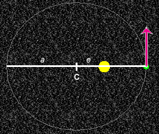
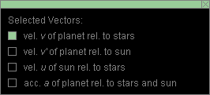
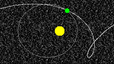
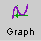
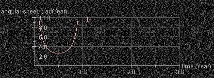
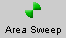
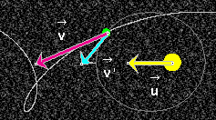
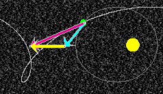

Instructions
This page is designed to get you started using the applet. The applet should be open. The step-by-step instructions on this page are to be done in the applet. You may need to toggle back and forth between instructions and applet if your screen space is limited.
 The Planet's Initial Position and
Velocity and the Shape of the Orbit
The Planet's Initial Position and
Velocity and the Shape of the Orbit
 Changing the Frame of
Reference
Changing the Frame of
Reference
Display the data box by pressing the Data button  .
Drag the box to another location on the screen. Its contents
are illustrated in Figure 1 below (but most likely with
values different from those in your case).
.
Drag the box to another location on the screen. Its contents
are illustrated in Figure 1 below (but most likely with
values different from those in your case).

Figure 1
Observe that the various quantities are displayed in units involving the units "AU" and "Year". These are convenient units in an astronomical context.
The AU is the astronomical unit. It is a unit of distance equal to the semi-major axis of the earth's orbit around the sun. 1 AU = 1.496×1011 m.
The Year is the time it takes the earth to make one revolution around the sun relative to the fixed stars. This is also called the the sidereal year. 1 Year = 365.26 mean solar days. The sidereal year must be distinguished from the calendar year which is equal to 365 or 366 mean solar days, depending on the particular year. It must also be distinguished from the tropical year and the anomalistic year which do not concern us in this applet.

Exercise 1. RESET  the
applet.
the
applet.
Click anywhere in the area of the orbit, and drag the sun-planet system to the lower left corner of the applet window. Display the data box, and drag it so that it does not overlap with the planet's orbit.
The planet-sun system can be dragged even while the motion is in progress. This is useful if the motion would otherwise take the planet out of the applet window. PLAY the motion, and drag the system while the motion is in progress.
Exercise 2. Moving the entire sun-planet system has no effect on the shape of the orbit. What does effect the shape of the orbit is the planet's initial position relative to the sun and the planet's initial veloocity. The applet does not allow you to control either quantity directly. Instead, you can control the shape of the orbit by setting the orbit's eccentricity e and semi-major axis a. These quantities are defined in connection with Figure 2 below.
Set the Eccentricity and Semi-major Axis sliders to e = 0.400 and a = 2.0 AU.
The orbit is now elliptical and should look as shown in Figure 2 below.

Figure 2
The longest diameter, the major axis, is indicated by a horizontal white line. The applet does not allow you to vary the orientation of the major axis.
The distance from the center "C" of the ellipse to the edge of the ellipse along the major axis is referred to as semi-major axis. It is denoted by the symbol a.
The distance from the center C to one of the two focal points of the ellipse (the sun is located at one focal point) is denoted by the symbol e. The ratio e/a is called the eccentricity. Its symbol is e. Thus,
e = e/a.
 (1)
(1)
Display the planet's velocity vector  relative to the fixed stars by selecting the Vectors button.
This opens up the vector panel. Select the appropriate
checkbox. See the illustration in Figure 3 below. The
velocity vector will be shown in magenta, as in the earlier
Figure 2.
relative to the fixed stars by selecting the Vectors button.
This opens up the vector panel. Select the appropriate
checkbox. See the illustration in Figure 3 below. The
velocity vector will be shown in magenta, as in the earlier
Figure 2.

Figure 3
Exercise 3. The eccentricity and the semi-major axis completely determine the shape of the orbit. Display the data box. Among the data values you will find
There is no freedom in choosing these values once the eccentricity and the semi-major axis have been set.
Exercise 4. Vary the eccentricity and the semi-major axis so that r and v take on the values
r = 1.43 AU,  v = 6.10 AU/Year .
v = 6.10 AU/Year . (2)
(2)
You may find this hard to do because both r and v vary simultaneously when you vary either the eccentricity or the semi-major axis. You can achieve the settings (2) for e = 0.350 and a = 2.2 AU.
Exercise 1. RESET the applet. A circular orbit is displayed.
PLAY  the motion, PAUSE
the motion, PAUSE  it,
then STEP
it,
then STEP  forward through the motion.
forward through the motion.
Display the data, and move the planet through one entire revolution. Determine the time t elapsed for one entire revolution, in other words, the planet's period. What value would you expect?
Exercise 2. REWIND  the
applet. Set the eccentricity and semi-major axis to 0.400 and
1.0 AU, respectively.
the
applet. Set the eccentricity and semi-major axis to 0.400 and
1.0 AU, respectively.
Display the planet's acceleration vector (orange) by checking the appropriate checkbox on the vector panel.
PLAY the motion, and observe how the acceleration vector points from the planet to the sun at all times and how its magnitude varies as the distance from the sun to the planet changes.
Exercise 3. REWIND the applet, and uncheck the
acceleration vector on the vector panel so that the
acceleration vector is hidden. Set the sun's velocity to -5.0
AU/Year. What you are setting with the Sun's-Velocity slider
is the x-component of the sun's velocity where the
x-axis is horizontal and pointing to the right. Click
the Trace toggle button  to display the path during the motion.
to display the path during the motion.
PLAY the motion. The entire system should be drifting left while the planet is moving around the sun. Keep dragging the system into view by clicking on the screen and dragging with the mouse.
REWIND the applet, and PLAY the motion again. You should see a path like that shown in Figure 4 below.

Figure 4
Exercise 4. REWIND the applet, and set the sun's velocity back to zero. Click the Graph toggle button , and PLAY the motion.
A graph of the planet's angular speed relative to the sun in rad/Year will be drawn as illustrated in Figure 5 below.

Figure 5
Click in the area of the graph, and drag the graph somewhere else on the screen.
The top of the w vs. t curve is not visible in Figure 5 and initially is not visible in the applet either. Bring it into view by holding down the Control key while dragging the graph downward.
Let the motion proceed until the curve that is being plotted runs out of space on the right. While holding down the Control key, drag the graph left and bring the right end of the curve back into view.
Exercise 5. REWIND the applet, and hide the graph of angular speed vs. time. Display sectors of equal area by clicking the Area Sweep toggle button .
PLAY/STEP the motion forward to measure the amount of time elapsed while the planet moves through the first sector, then the second sector, etc. Which sector requires the most time?
Exercise 1. Continuing from the previous section, REWIND the applet. Hide the sectors of equal area. Select all three velocity vectors on the vector panel, and hide the panel.
PLAY the motion. Three vectors are displayed, as in Figure 6 below:
representing the planet's velocity relative to the fixed
stars; is tangential to the actual path of the
planet;
'
relative to the frame in which the sun is at rest; ' is
tangential to the planet's elliptical orbit;
 relative to the fixed stars.
relative to the fixed stars.
Click the Labels button  to have the applet label the three velocity vectors as
in Figure 6.
to have the applet label the three velocity vectors as
in Figure 6.

Figure 6
Exercise 2. PAUSE the motion, or REWIND, then PLAY,
and then PAUSE at some point. Click on the yellow
sun's-velocity vector and drag it so that its tail end
coincides with the tip of the blue vector '.
Its tip should then coincide with the tip of the magenta
vector , as shown in Figure 7 below.

Figure 7
This demonstrates the Galilean velocity addition theorem,
= ' + .  (3)
(3)